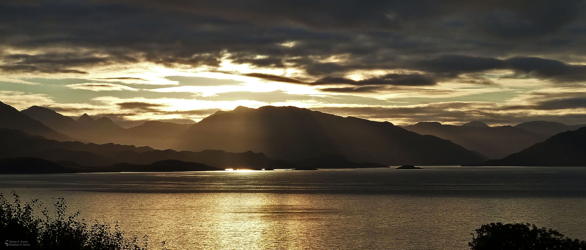

Welcome to Knoydart - the last true wilderness on mainland Britain.

Where is Knoydart? Knoydart is a remote peninsula tucked away on the west coast of the Scottish Highlands between Loch Hourn
and Loch Nevis. What makes Knoydart unique is that it can only be accessed by boat or foot. Knoydart is also home to Britain's remotest pub, the Old Forge located in the only village,
Inverie, on the peninsula. The area boasts some stunning scenery, along with exilliarating hill walks and glimpses of whales, dolphins and porpoises.
The map below shows Knoydart's location in the West Highlands, across the Sound of Sleat from the Isle of Skye. It lies between Loch Hourn and Loch Nevis, locals often refer to them as Loch Hell and
Loch Heaven.
For reference purposes, the map below has A-Z markers which show will appear throught the site showing the location of that particular item, please note you may have to zoom in or scroll to see some markers as
they may be grouped together.
Knoydart is unique as it is not connected to Britain's road network, the only way of reaching the peninsula is hill walking or by boat
from the nearby port of Mallaig.
Mallaig can be reached by road or rail from Fort William and by ferry from Armadale on the southern tip of the Isle of Skye. Knoydart can then be accessed by a ferry service
provided by Western Isles Cruises to Inverie A, the main settlement on Knoydart.
There are 2 main walking routes to Knoydart; via Glen Garry / Kinlochhourn C, or via Loch Arkaig / Glen Dessary D.
It should be noted that there is NO public transport to either Kinlochhourn or Strathan (Loch Arkaig) and both are on single track roads. Kinlochhourn is accessed from
the A87 near Invergarry and then a 21 mile trip along a single track road, there is a car park. Strathan is accessed via from Spean Bridge on the B8004 to Gairlochy, then the B8005 to Loch Arkaig, then an
unclassified road to the other end of the loch. There is a bothy at Strathan but no car park.
There are several options for accomodation in Knoydart, depending on the nature of your stay:
Test
Knoydart has a lot to offer for anyone who wants to disconnect from their everday lives, with nature on your door step there's something for everyone from hill walking to trips to arts & crafts.
Knoydart has a variety of hill walking options from hikes and wanders to Munro Bagging. The Knoydart peninsula sports 3 Munros, all which are a challenge not for the faint hearted:
E Ladhar Bheinn
F Luinne Bheinn
C Meall Buidhe
Knoydart has a boat charter service, the Calanna, for boat trips up Loch Nevis which offers stunning views of southern Knoydart, Morar and beyond. Iain Wilson, the boat's skipper has over 30 years experience and trips can be tailored to your needs.
Knoydart Community Garden is the result of hard working local gardeners and is a must far all green fingered visitors, even those not so keen. It has 2 poly-tunnels full of local produce for individual and communal use. The Garden even has a 'Pick Your Own' salad section and garden benches where you can sit and relax.
Knoydart Karbon Cycle is a mountain bike hire service run by the Knoydart Foundation Ranger Service. They have 7 adult and 3 children's bikes for hire and offer a range of hire periods and discounts for group bookings
Knoydart offers some excellent fishing opportunities with the Inverie River being the prime spot. The river holds Brown Trout, Sea Trout and, of course, Salmon. The river has 16 named pools for fishing, for full information on fishing please visit this link, or telephone the Kilchoan Estate Office on 01687 462 133.
We hope that the information on our site was useful, however there are a number of sources available for further Information on Knoydart, please see below for details.